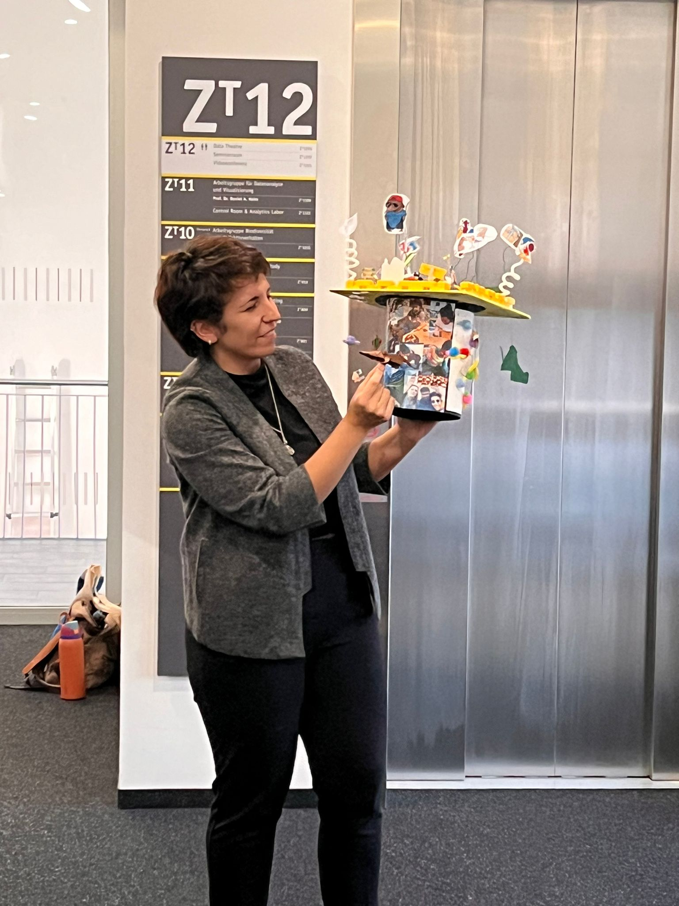

The Dissertation Journal that saved my sanity
The dissertation journal that saved my sanity
Last year today, I defended my PhD. But this is not a post about that. Or maybe, but just on the side.

In August 2023 I decided it was time to start with my dissertation. I was 3 years into my PhD and just started what I hoped was the last 12 months of it. What I didn’t know at the time was if my deadline was realistic enough (turned out it was), or where to even start (read on for more).
I honestly do not remember how the “Dissertation journal” idea came to be. Likely, I started googling random matches from a pool of keywords with the desperate energy of someone who knows they need help but isn’t sure what kind. When I finally stumbled upon the “Dissertation journal” sphere, I was quite intrigued at the concept. And disappointed at the low number of entries. Seriously, the entire internet’s wisdom on keeping a journal during dissertation writing could be read in under 10 minutes, which is interesting considering that the internet is full of gurus ready to flood you with tips for managing your academic life (e.g. citation managers, writing techniques, time management systems, magical rituals). Apparently keeping a journal specifically for your dissertation is not the most common suggestion. So I took it upon myself to flood the internet with this specific topic. I am the guru now.
Disclaimer:
Here’s something crucial that I wish more people understood: if you’re doing a STEM PhD, your dissertation isn’t just writing. In my case, writing felt like maybe 20% of the entire project. The rest was statistical modeling in R, data wrangling, creating figures, running analyses, checking and rechecking datasets, documentation, literature review - all the computational and analytical work that happens before you can even think about putting words on a page. The ‘dissertation writing’ phase isn’t really about writing; the complexity and technicality of the PhD project take most of your time (and sanity) away, and that eventually needs to be communicated through text.
If you are here now:
To be completely honest, before starting this “project” I was skeptical. I wonder if you are too. By your third/fourth year of a PhD, I can bet my arm that you’ve tried plenty of systems. Some worked for a week, and most were just added to the pile of things you felt guilty about not doing properly.
If you feel the same, just know that I’ve been there. But I also knew I needed a system to stay sane during the marathon ahead, and my usual “wing it and panic” approach wasn’t going to cut it this time. Here’s what I learned: some things are worth trying, even when you’re skeptical. This started as a last-ditch effort to avoid writer’s block, but it actually became the most valuable tool in my PhD arsenal. If you’re staring down your own dissertation deadline and wondering how on earth you’ll stay on track while managing the emotional roller coaster of academic writing, this one’s for you.
What is a Dissertation Journal, anyway?
A dissertation journal is a place to track reflections, questions, topics, feelings, progress about your dissertation and writing process. It necessarily is a separate space from your actual dissertation document, meaning it’s not where you draft your chapters or polish your paragraphs.
Here’s the key distinction: your dissertation journal is for thinking about your work, not for doing your work. It’s not a draft repository where you keep paragraphs for your next paper. It’s not a place where you’re trying to write “good” prose that will end up in your final document. That’s what your actual dissertation document is for.
Instead, a dissertation journal is more like a conversation you’re having with yourself about the process. You might write about being stuck on a particular analysis, or confused about how to frame an argument, or anxious about whether your research is “good enough.” You might jot down questions that occurred to you while reading a paper, or ideas about how to structure a chapter, or just a dump of everything in your head before you start the day’s work. It’s messy, it’s incomplete, and it’s supposed to be.
To make this more concrete: imagine you’re writing Chapter 2 and you get stuck on how to interpret your results. In your dissertation document, you’d eventually write a polished interpretation that fits into your narrative. In your dissertation journal, you’d write something more like: “I’m confused about what these results mean. They’re not what I expected. Does this mean my hypothesis is wrong or did I mess up the analysis? I need to re-read the methods section and check with my supervisor.” That’s the difference.
Based on my experience and the limited research available, a dissertation journal can serve several purposes:
It’s a thinking space. Before you try to communicate your ideas to anyone else (your supervisor, your committee, your readers), you need to think them through. The journal is where that thinking happens out loud.
It’s a place to practice writing without revising. You write things down without worrying about whether they’re good. You get comfortable with putting messy first drafts on the page, which you’ll need to do when writing actual chapters.
It’s a reality check on how much work you can actually do in a day. This was huge for me. You think you’re unproductive until you write down what you did and realize you completed two analyses, revised five paragraphs, and debugged an entire plotting function. Your perception of productivity is often wildly different from reality.
It’s a way to get into a writing mood. If you do it before your day starts or before a dedicated writing session, it warms up your brain and gets you ready to do the harder work.
The blog posts I found back in 2023 helped me understand this distinction between “thinking about your work” and “doing your work.” They showed me how to structure entries and how to view the whole experience without feeling like I was falling behind or doing it wrong. But I also deviated from their suggestions once I understood the core idea, which turned out to be fine. Systems work best when you adapt them to fit how you actually work, not how you think you should work. The point isn’t to follow someone else’s template perfectly, you need to create a tool that makes sense for your brain and your process.
Logseq and the ecosystem argument
Most articles about academic journaling assume you’re using a physical notebook, and I honestly don’t really understand why. My entire PhD lived on my computer. My data was in RStudio. My papers-to-cite were PDFs scattered across Collections and in Zotero. My actual dissertation was in Google Docs (before you say anything: yes, I’m slightly embarrassed about that choice). Adding a paper journal to this setup felt like asking myself to split my attention between two completely different systems. I do love a good notebook, and I had several in the past years, but for this specific purpose I decided to keep my dissertation journal in Logseq, the digital note-taking app.
I talked about Logseq already in other posts, and if I could I would just talk about it forever. But I will keep it short, and just say that Logseq fit into my existing workflow. It has a built-in journal feature, meaning that every day you open it, it creates a new page with today’s date. I tagged my dissertation-related entries with [[Dissertation Journal]], and everything organized itself automatically. To me, this means no “where did I write that on Tuesday?” panic. If I needed to find something, like my plan for a specific analysis, I could search for it instead of flipping through pages trying to decode my own handwriting (it has gotten worse through the years). Plus, since Logseq stores everything as markdown files, my entire journal was backed up through Git.
Why did I say that was fitting my workflow? Because I want to be clear that it doesn’t have to fit yours. For the way I organise my thoughts, Logseq is great. But maybe for you somethign else works better: the analog notebook, or your smartphone, the world is full of options. If you’re curious about setting up a system similar to mine, you can find a lot of materials online. But again, this post isn’t about convincing you to use Logseq specifically, use paper if paper works. Use Notion or Obsidian or whatever else fits how you think. The best system is the one you’ll actually use.
The point is this: your journal doesn’t have to be separate from the rest of your work. In fact, it might help if it isn’t.
My system in practice
Through trial and error, I developed a rhythm that actually stuck. The key was making it flexible enough to survive real life but structured enough to be useful. I started my dissertation journal on September 1, 2023. I stopped on July 12, 2024, the day I handed in my thesis. That’s ten months, give or take. In theory, I wrote entries every day. In practice, I didn’t. That’s fine.
I had two types of entries:
- Pre-Writing Sessions:
Pre-writing happened before I started working on the actual dissertation. Usually in the morning, sometimes right before a writing session. I’d spend 5-15 minutes getting my thoughts down. Where was I in the project? What did I need to tackle today? What was I worried about? The goal was to clear mental space and get into a writing mindset.
I came across this idea of “just keep writing” in one of those original blog posts. It’s basically freewriting: you don’t stop, you don’t revise, you just write. No scrolling through your phone for “inspiration.” No staring out the window unless you’re actively thinking. And you write about your dissertation, not about what you had for dinner or the argument you had with your flatmate.
This sounds simple, but it’s surprisingly effective. When you commit to not stopping, you can’t get stuck on finding the perfect word. You just keep moving, and that momentum carries into the actual writing work.
- [[Dissertation Journal]] 3 minutes, pre-work
- `{renderer(:wordcount_)}` Words 124
- Today I will organize the bibliography, so that the paper looks a bit more complete (also with line numbers). Still unsure about the author's positions, and about the title. I will probably need to think about it a bit tomorrow (I will make a note).
I will re-read the introduction, just to be sure about the chronic stress part, and how much specific I should be about that in the discussion.
In the meantime, I am re-running the model for the associative learning task with all the data at once. If that does not work I will just put the data like I intended at the beginning: data from the model wild, and data or captive only from the other model.- Post-Writing Sessions:
Post-writing entries were shorter. After a work session, I’d note what I’d accomplished and what I should start with next time. This did two things: it showed me what I’d actually done (which helped on days when I felt like I’d gotten nowhere), and it gave me a clear starting point for tomorrow (or, well… you know…). No sitting down the next time wondering “wait, what was I doing?”
On a good day, I could write 100-200 words in three minutes. Other times, I had ten minutes and barely wrote a sentence. I’m saying this because length didn’t matter. What mattered was showing up and doing it.
Example entry:
- [[Dissertation Journal]] post-writing 5 min
- Discussion done, still not completely happy with it but I guess it's better to have some suggestions on how to improve it instead of modifying it without knowing what's best.
I think the most difficult part of it it's the multifaceted (loving this word) nature of the variables, and how different explanations might interconnect. Now that I think about it I did not really talk much about chronic stress in the discussion, except on passing. That could be a bit deepened somehow, but I have to re-read the introduction and see hoe much detail I should provide.The Prompts that worked
If you’re starting out, you might consider having a list of prompts. The more you practice with your dissertation journal, the less likely you might need them, but it’s a good starting point for when you have the “blank page syndrome” or you have no idea where your thoughts are. I got my prompts from this blogpost, here are the ones that I kept: - Where am I at? - What did I accomplish today? - What was my biggest obstacle? - What do I do in the future if I find this again? - Is there anything I need to read or learn before the next writing session? - How should I start the next session of this project?
These weren’t rigid rules - some days I completely ignored them and just wrote whatever was on my mind. The prompts were there for days when staring at a blank page felt overwhelming, which happened more often than I’d like to admit during those first few months.
One practical element that helped me stay consistent was building the journal into existing routines. For example, I hosted weekly collaborative writing sessions with other doctoral students every Thursday morning; I’d connect half hour before for some chat and pre-writing time. Those minutes became part of my Thursday ritual, a structured moment to collect my thoughts using one or two of these prompts before diving the rest into 3-4 pomodoro sessions. Having that external structure helped anchor the practice.
The Weekly Review
On March 1, 2024, about halfway through my dissertation journal practice, I started doing weekly reviews where I’d set aside time every Friday afternoon to look back at the week. This became so valuable that I’m genuinely considering restarting the practice for my current projects, even though they’re not dissertation-related.
The structure I used was intentionally simple, designed to fit on one page without becoming another overwhelming task:
Weekly review #reviewing
Accomplishments
- here I would list some accomplishments
- doesn't have to be big milestones
- small wins count
Selection of papers to read for the next week
- Paper 2021
- Paper 2015
Things to do
- Finish the paragraph xx
- Debug the analysis script
[[Dissertation Journal]] Week ReviewI tagged these reviews with #reviewing so they’d stay organized, and also included the [[Dissertation Journal]] tag so everything ended up searchable in the same place. This dual-tagging system in Logseq meant I could view all my reviews separately or see them integrated with my daily entries, depending on what perspective I needed.
The weekly reviews proved transformative in ways I didn’t expect. Daily entries kept me grounded in immediate tasks and helped me navigate the day-to-day chaos, but weekly reviews let me zoom out and see the bigger picture. I could identify patterns in my productivity, notice when I kept getting stuck on the same technical problem, and celebrate progress that felt completely invisible when I was in the thick of daily work. Looking back at a week’s worth of accomplishments reminded me that even when individual days felt unproductive, I was actually moving forward.
How keeping a Dissertation Journal actually helped
Staying on Track
The biggest practical benefit was reality-checking my own productivity, which turned out to be wildly different from my perception of it.
Before starting the journal, I’d often reach the end of a day feeling like I’d accomplished nothing, even when I’d actually made significant progress on difficult tasks. Writing down what I’d done, even small things like “debugged the plotting function” or “revised two paragraphs of the methods section”, made progress visible in a way that my anxious brain couldn’t dismiss.
The post-writing entries also created built-in starting points for the next session, which eliminated one of my biggest sources of procrastination. Instead of sitting down and spending 20 minutes trying to remember where I’d left off and what I was supposed to do next, I had notes from my previous session telling me exactly what to tackle first. This cut down dramatically on the mental friction of getting started, especially on days when motivation was low.
Because I was tracking what I actually accomplished each day, I gradually got better at estimating how much I could realistically do, which improved my planning and reduced my frustration. Early on, I’d over impose way too much for a single day and then feel discouraged when I didn’t finish, which would spiral into guilt and avoidance. The journal taught me what a day’s work actually looked like in practice, not in my optimistic imagination - turns out, finishing one good analysis or writing 500 decent words was often a full day’s work when you’re also dealing with debugging, literature review, and all the other peripheral tasks that come with dissertation research. I started setting more realistic expectations for myself. The result? I stayed on track. Like for real. It had never happened before!
Example:
I am gonna try with this form of free writing, and then use it as dissertation journal. I would like to make a plugin myself to have both timer and wordcount in the same renderer (not sure if it's possible, but I would like to try).
Regarding my dissertation project (or well, for now better say my phd project), today I really want to focus on drafting the discussion. having something to work with before the end of next week would be great. Next week I want to put it online so Dina can correct. Before that, tomorrow I will finish with the bibliography and add that. Then today I will finalize the author list as well. I am never sure who should be where in the paper... mostly I want to know about Dominik, Marco and Myles, because they helped with data and paper writing.
The pomodoro timer sucks. Need a better timer.Connecting to Feelings
Dissertation writing is emotional work in ways that no one really prepares you for when you start a PhD. There’s imposter syndrome that whispers you’re not smart enough for this, the anxiety about whether your research actually matters or contributes anything meaningful to your field, the frustration when three days of analysis reveals your models were wrong all along (is it the models or was it you?), and the exhaustion from revising the same paragraph twelve times because you can’t quite get the phrasing right.
The journal gave me a place to acknowledge those feelings without judgment or the pressure to immediately solve them. Actually, I feel silly writing this down because I’ve never been into writing my feelings, and peace and harmony and hippie-like hairstyles with flowers, but honestly, who cares. Every entry was a set of valid responses to the reality of doing difficult intellectual work, and it was part of the process I needed to move through.
Writing about emotions didn’t make them disappear (that would be too conventient) but it did make them less likely to derail my entire day or week. Once something was on the page, it somehow had less power over me; I could see it, acknowledge it, give it space, and then create some distance from it to move on to the actual work.
Example:
- [[Dissertation Journal]]
- I feel a bit overwhelmed today by the amount of tiny (and big) thing to take care of. From the paper perspective, I feel very close to a close, but at the same time there are many things to finalize, going from the writing to the submission; this will take a while even if I don't want to admit it. The overwhelming feeling comes up everytime I realise there is something missing, or something that needs an addition, or a change, and it exacerbates when I match any of this thought with the realisation that My deadiline was supposed to be two months ago.Alleviating Writer’s Block
Writer’s block is a luxury you can’t afford during dissertation writing, because deadlines don’t care if you’re feeling uninspired or blocked or convinced that everything you do is terrible. You still need to produce, and it still needs to be done by your submission date.
The freewriting approach I practiced in my journal entries helped here more than I expected. By writing regularly without revising, I was essentially training myself to lower the stakes of putting words on a page. Not every sentence had to be perfect on the first try. Not every paragraph had to be dissertation-ready prose. Sometimes writing just meant getting ideas down messily and sorting them out later through revision, which is actually how most professional writers work anyway (I assume).
The journal became a low-pressure space to practice this approach to writing. When I sat down to write actual dissertation chapters after months of journaling, I’d already internalized the idea that first drafts don’t have to be good, they just have to exist. This made it easier to draft messy first versions and revise them later, rather than getting stuck trying to make every sentence perfect before moving to the next one, which is a guaranteed way to never finish anything.
Fun fact: I wrote my General Introduction in 3 weeks. Is it great? Absolutely not. Is it done? Hell, yes.
[[Dissertation Journal]] pre writing (5 minutes)
Super hard to start with the 5 minutes timer this morning. However, I really needed to write don few things before start working on the discussion. I think the problem I'm having with the discussion is the same I had with the introduction. I feel there are many things to write and point out, but I'm not sure how to connect them. Or better said, I think that each topic is a whole rabbit hole in which I could get lost. For now I think I will start dividing the discussion session in 3 parts: brain, cognition and activity and highlight the results and what does that mean. Then I will go into the more problematic part, like about feeding regimes and how they could affect activity levels and motivation, and try to find all the references.Honest downsides
No system is perfect, and dissertation journals come with real risks that I think are worth discussing honestly rather than pretending this is a magical solution to all PhD problems.
Wallowing
There’s a meaningful difference between acknowledging difficult feelings and dwelling on them unproductively. Some days, I’d start journaling about feeling overwhelmed and just… keep going down that path. Twenty minutes later, I’d written three paragraphs about imposter syndrome and everything I was doing wrong, and accomplished nothing else except making myself feel worse.
Example:
As the first day truly back into my working habits, it was not so bad. I have now a working discussion draft, that still need a lot of work but it's not a blank page. I think it could be nice to have this pre and post writing free-writing sessions, and would be super great to be able to tag them usefully in logseq so to have them all organised.
I think tagging them DissertationJournal is not enough, and could be limiting. But I could also only leave it as it is and have them in the respective day. I might need to think how to reorganize things accordingly.
Another thing that's buggering me a bit is that lately I feel like I have to google everything, including understanding my own thoughts and review my option. For a simple thing like finding the right tags to use in logseq, I cannot do it on my own and I always try to use help from the internet. This makes me feel quite a bit useless, and makes me wonder if I am indeed good enough for this (or any) jobs, if I cannot even solve a tiny problem by myself, mostly a problem regarding organisation, that should not have a common answer, but depends on what I need.Reflection can turn into rumination if you’re not careful, especially if you’re prone to anxiety or perfectionism (the Webster dictionary definition of a PhD student). The fix I eventually found: set a timer. When it goes off, you’re done journaling, even if you’re mid-sentence. This forces you to move from processing to action, which is the actual point of the journal.
Procrastination
Journaling about writing is not the same as actually writing your dissertation, which seems obvious but is surprisingly easy to forget when you’re looking for ways to avoid difficult work. It’s easy to convince yourself that spending an hour on a journal entry analyzing your feelings about Chapter 3 is “productive dissertation work” when really, you’re avoiding the much harder task of actually revising Chapter 3.
I caught myself doing this occasionally - the journal was easier and felt safer than the dissertation, so I’d keep journaling instead of switching to the actual writing. The fix: be honest with yourself about what you’re doing. If your journal entry is running unusually long or you’re spending more time journaling than writing, ask yourself whether you’re processing something useful or just procrastinating in a way that feels academic.
[[Dissertation Journal]] pre writing (5 minutes)
I am gonna try with this form of free writing, and then use it as dissertation journal. I would like to make a plugin myself to have both timer and wordcount in the same renderer (not sure if it's possible, but I would like to try). Today the main thing I want to see is if I can bring out otto and manage to take the train at 12:58 to Radolfzell. Every second Thursday I will have a meeting with Dina right before the HF meeting, so it would make sense to just be there, but it is a bit tight with the timing.Forgetting (and Remembering)
After I submitted my dissertation in July 2024, something strange happened: I completely forgot about the journal. Not in a “oh, I haven’t looked at it in a while” way, but in a “this entire practice vanished from my brain” way. For months after submission, it didn’t even occur to me that I’d kept a dissertation journal. My brain just purged it along with most of my memories of the actual writing process.
I only remembered when I was working on a completely different project several months later, analyzing my note-taking habits for blog posts about personal knowledge management systems. I was pulling together entries from Logseq, and suddenly there they were: ten months of dissertation journal entries, neatly tagged and organized, chronicling a journey I’d somehow forgotten I’d documented.
The timing feels oddly perfect. I defended my dissertation on November 4, 2024, and this post is going live exactly one year later. Full circle, in a way that I didn’t plan but appreciate.
Should You Try It?
I’m not here to tell you that everyone needs a dissertation journal - some people have other systems that work perfectly well, and some people don’t need this kind of external structure to stay on track and process their experience.
But if you’re feeling stuck, overwhelmed, or like you need a system to keep yourself accountable and sane during the dissertation process, it’s worth trying even if you’re skeptical about whether it will help.
How to Start
Pick your medium based on your existing workflow. Digital or paper doesn’t matter as much as choosing something that integrates with how you already work. If your dissertation life happens on your computer, consider a digital tool; if you think better with a pen in hand, use a notebook.
Start small to avoid overwhelming yourself with yet another thing you’re supposed to do perfectly. Five minutes. Don’t overthink it.
Try pre-writing, post-writing, or both to see what feels useful for your specific process. Some people need the morning brain dump; others prefer the end-of-day reflection. Experiment.
Give it a real shot before deciding whether it works for you. Two weeks minimum, ideally a month. One entry doesn’t tell you whether this practice will be helpful.
Adjust as needed because the point is to create something useful for you, not to follow someone else’s system perfectly. If the prompts don’t help, drop them. If daily feels like too much, try weekly. Make it work for your needs and your brain, not the other way around.
The most important thing: try it even if you’re skeptical. I was skeptical too, and it still helped me more than I expected.
TL;DR
One year ago, I defended my dissertation after ten months of intensive work on bringing together years of research into a coherent document. The months leading up to that defense were some of the most intellectually and emotionally intense of my PhD, requiring me to manage not just the writing but also all the technical work that goes into a STEM dissertation.
The dissertation journal didn’t make the work easy - nothing could do that - but it made it manageable. It gave me a place to think, to process, to acknowledge both progress and struggle, and to keep moving forward even when I wasn’t sure I could.
When I started this practice in September 2023, I didn’t have everything figured out. I didn’t know if it would work or if I’d give up on it after a week. I just knew I needed something to help me stay sane and on track, and this was worth trying despite my skepticism.
That’s the real lesson I want to share: not that dissertation journals are magic solutions, but that sometimes the things worth doing are the things you try despite your doubts. You don’t need a perfect system or complete confidence that it will work. You just need to be willing to start and see what happens.
If you’re in the middle of dissertation writing and feeling stuck or overwhelmed, maybe give this a try. Keep it simple. Stay flexible. See what helps. You might be surprised.